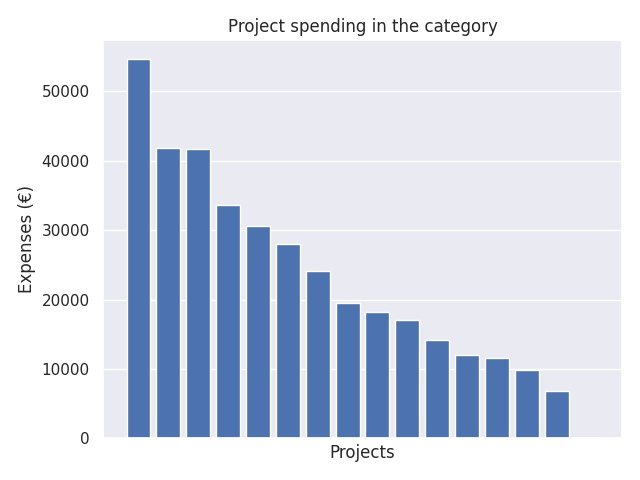

Kärkihanke 6 - Joustavan perusopetuksen (JOPO) toiminnan kehittäminen 2017
Category summary
22.7K spent on average
54.6K highest spending

Reports in the category
Kouvolan kaupunki
Project name: JOPO -verkostosta voimaa 2.0
54.6K spent
Laukaan Kunta
Project name: JopoPedia-JOPO 2018
41.8K spent
Helsingin kaupunki
Project name: Jopo kehittämishanke 2018
41.6K spent
Kuopion kaupunki
Project name: JOPOSAVO
33.6K spent
Laihian kunta
Project name: JOPOLLA PONTTA PERUSOPETUKSEEN
30.6K spent
Kittilän kunta
Project name: JOPOlla ympäri Lappia
28.1K spent
Nakkilan kunta
Project name: Joustavasti jopolla
24.1K spent
Pargas stad
Project name: JOPO - Södra Finland tillsammans
19.5K spent
Rauman kaupunki
Project name: Lounais-Suomen JOPO - kehittämis- ja koulutusverkosto
18.1K spent
Hyvinkään kaupunki
Project name: Joustavasti yhdessä 2
17K spent
Ylivieskan kaupunki
Project name: Joukolla joustavasti
14.1K spent
Lieksan kaupunki
Project name: Laatua JOPO-toimintaan
12K spent
Pälkäneen kunta
Project name: Pirkanmaan parastajat - JOPO-toimijoiden verkostohanke II
11.5K spent
Pudasjärven kaupunki
Project name: Joposta jatkoon.
9.88K spent
Paraisten kaupunki
Project name: LOJOPO yhteistyöllä oppilaiden ja opetuksen hyväksi
6.87K spent
Raseborgs stad
Project name: Jopo i Västnyland
0 spent